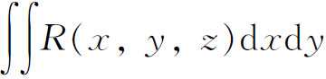
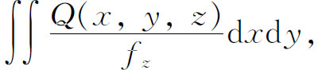
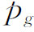
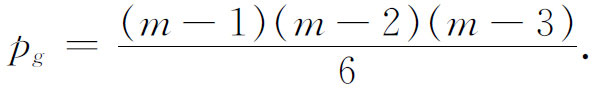
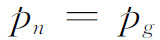
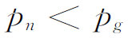
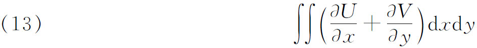
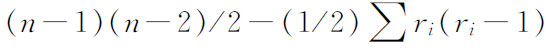

8．曲面的代数几何
几乎从曲线的代数几何工作开始之时起，曲面的理论就有人研究了。这里工作的方向也转向在线性与双有理变换下的不变量。像方程f（x，y）＝0一样，多项式方程f（x，y，z）＝0也有双重解释。若x，y，z取实数值，则方程代表一个三维空间的二维曲面。然而，若这些变量取复数值，则此方程代表六维空间的四维流形。
研究曲面的代数-几何方法类似于研究曲线的方法。克莱布什用函数论方法并引进(54)二重积分，相应于曲线论中的阿贝尔积分。克莱布什指出，对于有孤立多重点和寻常多重直线的m次代数曲面，某个m－4次曲面应该起m－3次伴随曲线对于m次曲线的作用。已给有理函数R（x，y，z），其中x，y和z由f（x，y，z）＝0相关联，如果要使二重积分

在四维曲面的二维域上恒保持有限，则求得其形式为

其中Q是m－4次多项式。Q＝0是一个伴随曲面，通过f＝0的多重直线，且在f＝0的每一个k阶多重直线处有一个至少是k－1阶的多重直线，以及在f的每个q阶孤立多重点处有一个至少是q－2阶的多重点。这种积分叫做第一类二重积分。这类线性无关积分的个数，即是Q（x，y，z）中基本常量的个数，叫做f＝0的几何亏格

。如果曲面没有点的多重直线，则
马克斯·诺特(55)与措伊滕（Hieronymus G．Zeuthen，1839—1920）(56)证明pg是曲面（不是全空间）在双有理变换下的一个不变式。
直到这里，曲面和曲线论的类比是好的。第一类二重积分类似于第一类阿贝尔积分。但现在明显出现第一个差异。必须计算m－4次多项式Q（它在曲面多重点处的性态使积分保持有限）中的基本常量的个数。但只有当多项式次数N充分大时，才可用确切公式求得条件的个数。若将N＝m－4代入此公式，便可得不同于pg的一个数。凯莱(57)称此新数为曲面的数值（算术的）亏格pn。最一般的情况是

。当等式不成立时有
，那时曲面称为非正则的；否则称为正则的。后来措伊滕(58)与马克斯·诺特(59)证明了pn在它不等于pg时的不变性。皮卡［（Charles）Emile Picard］(60)发展了第二类二重积分的理论。这些是以

那样的方式变为无穷大的积分，其中U和V是x，y与z的有理函数，且f（x，y，z）＝0。不相同的第二类积分的个数是有限的，这里所谓不相同的意义是指这些积分的线性组合中没有一个能化成（13）的形式，这个数是曲面f＝0的双有理不变量。但和曲线情况比就不对了，不相同的第二类阿贝尔积分的个数是2p。代数曲面的这个新不变量似乎与数值亏格或几何亏格没有联系。
代数曲面的研究成果远比曲线少得多。一个理由是曲面可能有的奇点要复杂得多。皮卡和西马尔（Georges Simart）有一个定理被贝波·莱维（Beppo Levi，1875—1928）(61)所证明：任何（实的）代数曲面能够双有理地变换成无奇点的曲面，然而它必须在一个五维的空间内。不过这个定理没有多大用处。
就曲线来说，单独的不变量亏格p能够用曲线的特征数或黎曼曲面的连通数来定义，就f（x，y，z）＝0的情形说，还不知道算术上刻画双有理不变量的个数(62)。我们不打算进一步描述曲面代数几何的少数有限成果。
代数几何的主题现在包括对高维图形（流形或簇，由一个或多个方程定义）的研究。除了在这个方向的推广之外，还有另一类推广，即在定义方程中用更一般的系数（这些系数可以是抽象环或域中的元素），并用抽象代数的方法进行研究。研究代数几何的方法有好几种，又因20世纪用了抽象的代数叙述，导致在用语上与研究方法上产生明显的差别，使得一类的工作者很难于了解他类的工作。20世纪强调的是抽象代数研究方法。看来这确实能明确表达定理与证明，从而解决了对旧结果的意义与正确性所引起的许多争论。然而大多数研究工作似乎对代数的关系比对几何的关系更多一些。
参考书目
Baker，H．F．：“On Some Recent Advances in the Theory of Algebraic Surfaces，”Proc．Lon．Math．Soc．，（2），12，1912-1913，1-40．
Berzolari，L．：“Allgemeine Theorie der höheren ebenen algebraischen Kurven，”Encyk．der Math．Wiss．，B．G．Teubner，1903-1915，ⅢC4，313-455．
Berzolari，L．：“Algebraische Transformationen und Korrespondenzen，”Encyk．der Math．Wiss．，B．G．Teubner，1903-1915，Ⅲ，2，2nd half B，1781-2218．Useful for results on higher-dimensional figures．
Bliss，G．A．：“The Reduction of Singularities of Plane Curves by Birational Transformations，”Amer．Math．Soc．Bull．，29，1923，161-183．
Brill，A．，and M．Noether：“Die Entwicklung der Theorie der algebraischen Funktionen，”Jahres．der Deut．Math．-Verein．，3，1892-1893，107-565．
Castelnuovo，G．，and F．Enriques：“Die algebraischen Flächen vom Gesichtspunkte der birationalen Transformationen，”Encyk．der Math．Wiss．，B．G．Teubner，1903-1915，ⅢC6b，674-768．
Castelnuovo，G．，and F．Enriques：“Sur quelques récents résultats dans la théorie des surfaces algébriques，”Math．Ann．，48，1897，241-316．
Cayley，A．：Collected Mathematical Papers，Johnson Reprint Corp．，1963，Vols．2，4，6，7，10，1891-1896．
Clebsch，R．F．A．：“Versuch einer Darlegung und Würdigung seiner Wissenschaftlichen Leistungen，”Math．Ann．，7，1874，1-55．An article by friends of Clebsch．
Coolidge，Julian L．：A History of Geometrical Methods，Dover（reprint），1963，pp．195-230，278-292．
Cremona，Luigi：Opere mathematiche，3 vols．，Ulrico Hoepli，1914-1917．
Hensel，Kurt，and Georg Landsberg：Theorie der algebraischen Funktionen einer Variabeln（1902），Chelsea（reprint），1965，pp．694-702 in particular．
Hilbert，David：Gesammelte Abhandlungen，Julius Springer，1933，Vol．2．
Klein，Felix：Vorlesungen über die Entwicklung der Mathematik im 19 Jahrhundert，1，155-166，295-319；2，2-26，Chelsea（reprint），1950．
Meyer，Franz W．：“Bericht über den gegenwärtigen Stand der Invariantentheorie，”Jahres．der Deut．Math．-Verein．，1，1890-1891，79-292．
National Research Council：Selected Topics in Algebraic Geometry，Chelsea（reprint），1970．
Noether，Emmy：“Die arithmetische Theorie der algebraischen Funktionen einer Veränderlichen in ihrer Beziehung zu den übrigen Theorien and zu der Zahlentheorie，”Jahres．der Deut．Math．-Verein．，28，1919，182-203．
————————————————————
(1) Jour．für Math．，28，1844，68-96＝Ges．Abh．，89-122．
(2) Cambridge Mathematical Journal，3，1841，1-20；与3，1842，106-119。
(3) Coll．Math．Papers，I，273．
(4) Coll．Math．Papers，2，4，6，7，10．
(5) Jour．für Math．，27，1844，89-106，319-321．
(6) Jour．für Math．，55，1858，97-191；和62，1863，281-345。
(7) Phil．Trans．，146，1856，101-126＝Coll．Math．Papers，2，250-275．
(8) Jour．für Math．，69，1868，323-354．
(9) Math．Ann．，2，1870，227-280．
(10) R．Clebsch and F．Lindemann，Vorlesungen über Geometrie，I，1876，p．291．
(11) Math．Ann．，1，1869，56-89，90-128．
(12) Clebsch-Lindemann，p．288。
(13) Math．Ann．，17，1880，217-233．
(14) Jour．für Math．，100，1887，223-230．
(15) Math．Ann．，30，1887，15-29＝Ges．Abh．，2，102-116．
(16) Math．Ann．，33，1889，223-226＝Ges．Abh．，2，162-164．
(17) Math．Ann．，36，1890，473-534＝Ges．Abh．，2，199-257，和直到1893年后发表的论文。
(18) Nachrichten König．Ges．der Wiss．zu Gött．，1899，240-242．
(19) Phil．Trans．，154，1864，579-666＝Coll．Math．Papers．2，376-479，p．380．
(20) Jour．für Math．，134，1908，23-90．
(21) Jour．für Math．，139，1911，118-154．
(22) Theorie der Kreisverwandschaft（反演论），Abh．König．Säch．Ges．der Wiss．，2，1855，529-565＝Werke，2，243-345。
(23) Jour．de Math．，10，1845，364-367．
(24) Jour．de Math．，12，1847，265-290．
(25) Gior．di Mat．，1，1863，305-311＝Opere，1，54-61；又3，1865，269-280，363-376＝Opere，2，193-218．
(26) Math．Ann．，3，1871，165-227，特别是p．167。
(27) Jour．für Math．，73，1871，97-110．
(28) Atti Accad．Torino，36，1901，861-874．
(29) Jour．für Math．，63，1864，189-243．
(30) Jour．für Math．，63，1864，189-243．
(31) Jour．für Math．，64，1865，43-65．
(32) Jour．für Math．，64，1865，98-100．
(33) 若重（奇）点是ri阶的，则曲线C的亏格p是

，其中和式遍历所有重点。亏格是更细致的概念。(34) Math．Ann．，9，1876，163-165．
(35) Jour．für Math．，54，1857，115-155＝Werke，2nd ed．，88-142．
(36) Jour．für Math．，64，1865，43-65．
(37) Jour．für Math．，64，1865，210-270．
(38) Proc．Lon．Math．Soc．，4，1871-1873，347-352＝Coll．Math．Papers，8，181-187．
(39) Jour．für Math．，65，1866，269-283．
(40) Math．Ann．，21，1883，141-218＝Ges．Math．Abh．，3，630-710．
(41) Bull．Soc．Math．de France，11，1883，112-125＝Œuvres，4，57-69．
(42) Acta Math．，31，1908，1-63＝Œuvres，4，70-139．
(43) Math．Ann．，67，1909，145-224．
(44) “Über die algebraischen Funktionen und ihre Anwendung in der Geometrie，”Math．Ann．，7，1874，269-310．
(45) Jour．für Math．，93，1882，271-318．
(46) Jour．de l'Ecole Poly．，Cahier 52，1882，1-200＝Œuvres，3，261-455．
(47) Nachrichten König．Ges．der Wiss．zu Gött．，1871，267-278．
(48) 又参看马克斯·诺特，Math．Ann．，9，1876，166-182与23，1884，311-358。
(49) Jour．für Math．，91，1881，301-334＝Werke，2，193-236．
(50) 重出现于萨蒙的Higher Plane Curves法文版（1884）的一个附录中。又在皮卡［（Charles）Emile Picard］的Traité d'analyse，2，1893，364 ff．＝Œuvres，4，1-93。
(51) Jour．für Math．，91，1881，301-334与92，1882，1-122＝Werke，2，193-387．
(52) “Theorie der algebraischen Funktionen einer Veränderlichen，”Jour．für Math．，92，1882，181-290＝戴德金的Werke，Ⅰ，238-350。
(53) “Über die Theorie der algebraischen Formen，”Math．Ann．，36，1890，473-534＝Ges．Abh．，2，199-257．
(54) Comp．Rend．，67，1868，1238-1239．
(55) Math．Ann．，2，1870，293-316．
(56) Math．Ann．，4，1871，21-49．
(57) Phil．Trans．，159，1869，201-229＝Coll．Math．Papers，6，329-358；和Math．Ann．，3，1871，526-529＝Coll．Math．Papers，8，394-397．
(58) Math．Ann．，4，1871，21-49．
(59) Math．Ann．，8，1875，495-533．
(60) Jour．de Math．，（5），5，1899，5-54，及以后的文章。
(61) Annali di Mat．，（2），26，1897，219-253．
(62) 所涉及的流形是不能刻画的，甚至是不能拓扑地刻画的。